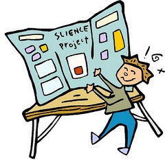

Projects

Project Ideas We will gather pointers to code repositories that we consider candidates for projects. It is your responsibility to study the repositories, to understand the basic idea behind them, and to come up with ideas on what kind of functionality a Rust module may provide for the project.
a bloom filter server
a streaming JSON parser
a 2-D game physics library
If you find code repositories that you consider suitable for a course project but, for some reason, you cannot or do not want to work on, please let us know.
Deadlines The deadline for choosing a code base is 6 February.
By 20 February, you will deliver a memo that describes the project, its purpose and its internal organization.
On 16 March, all of you will present the existing code base: an overview [external view], a demo of how it works, and a tour of the design/code as far as needed to run your project.
On 03 April On the project due date, submit a gzipped tar ball of the project to Dr. Tov. The repo must include a (maximally) one-page memo describing your project; you may reuse prose from the proposal memo.
Draft The draft of the memo is due on Friday 27 March NOON on Ms. Biron’s desk.
You will present your results in the weeks of April 06 and 13.
your names
the title of the project and a link to the project
a three to five word description of what you wish to accomplish
Partners
Project
Objective